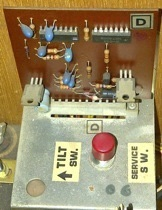
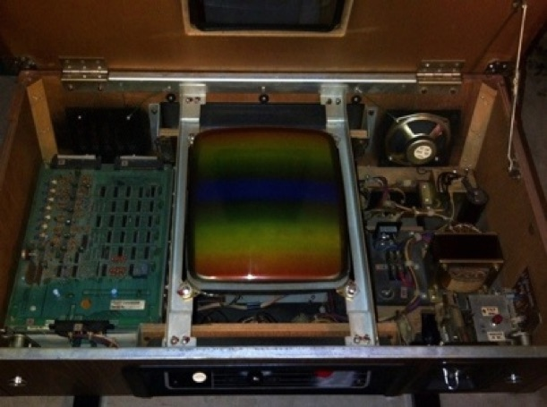
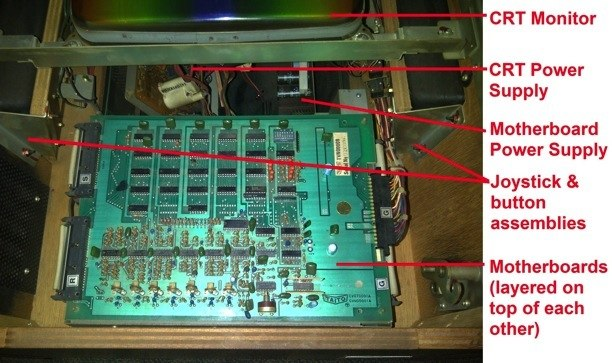
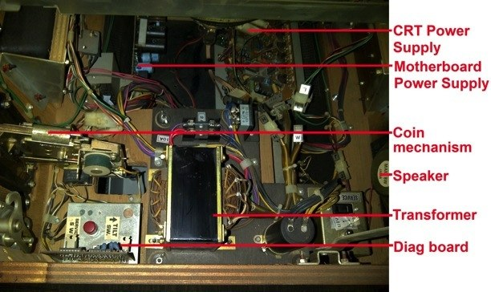
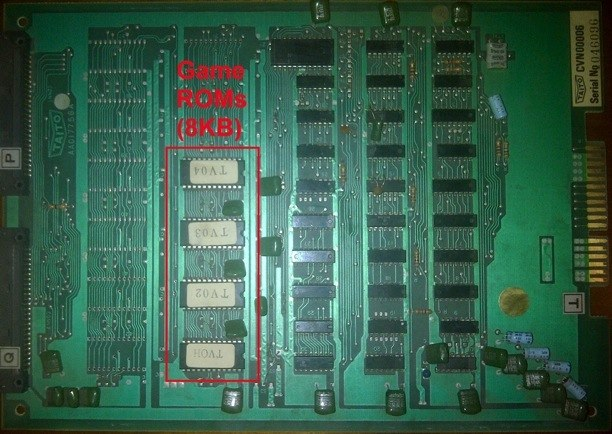
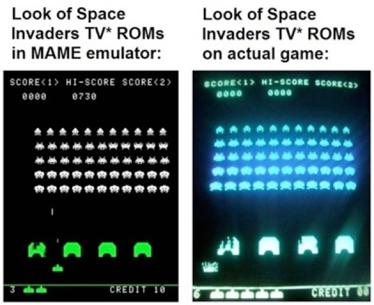
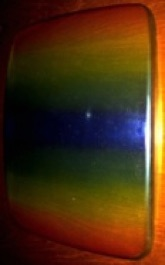
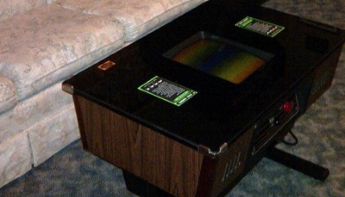

Space Invaders restoration
Thursday, February 9, 2012
I finished restoring a Space Invaders game this week that I picked up, and part of that process involves removing and cleaning individual components including the many circuit boards in the machine.
I can definitely tell you that the stuff inside the original 1978 Space Invaders game is pretty archaic by today’s standards (heck, it is archaic by 1980s standards ;-).
The Cabinet Layout:
One thing you won’t find on a modern system is a large number of circuit boards, power supply equipment (transformers, regulators, etc.) and tons of wires connecting it all together.

A modern system would have one small power supply connected to a single circuit board and a small monitor interface. However, Space Invaders had several circuit boards - there were 3 motherboards that held the game electronics, a CRT circuit board and power supply, and even another smaller circuit board that controlled how many coins were needed to play the game, as shown to the right: Since this game was built at the dawn of the video game industry, it was overly complex but well-made. When you flip up the top, you expose the motherboards on the left, the CRT monitor in the middle and other circuitry on the right:

Below is a description of the components on the left side of the CRT monitor:

What you can’t see in the picture above is the power switch, main fuse, fan, and power conditioner directly underneath the motherboards. Also, the recessed joystick and button assemblies are very well made - the joysticks and buttons themselves are much higher quality than those made in the 1980s and 1990s.
Below is the cabinet layout on the right side of the CRT monitor (notice how all of the wires are neatly held down with wire ties):

The Motherboards:
Let’s check out the 3 motherboards, which were stacked on top of each other in a metal chassis with plastic guides for the motherboard edges. The top motherboard is mainly used to generate the sound in the game. Space Invaders use a rather primitive method for generating sounds - each sound effect had it’s own amplifying circuit, or “operational amp.” As a result, you could control the volume of each individual sound effect using one of 7 volume knobs, or the master volume of all sounds using a large volume knob as shown below:

There were also 8 DIP switches on the sound board shown above that were used to determine the core functionality of the game, which is also very strange for modern games:
Switch 1: On=Coin information is displayed, Off=Coin information is not displayed
Switch 2: On=Bonus base awarded at 1500 Pts, Off=Bonus base awarded at 1000 Pts
Switch 3 Switch 4
3 Bases per game On On
4 Bases per game On Off
5 Bases per game Off On
6 Bases per game Off Off
Switches 5,6,7 and 8 were not used.
The middle motherboard is the CPU & RAM board. The CPU is an Intel 8080 manufactured by Texas Instruments (TMS8080), and there is 8KB of RAM for the game. Only 1KB of RAM was used by the CPU for general calculations and 7KB was used for graphics.

The bottom motherboard contains that actual Programmable ROM chips that store the actual Space Invaders game code. Space Invaders uses 8KB of ROM. On this motherboard, this ROM is spread out over four 2KB ROM chips since the labels start with TV. However, if the labels started with SV, they would indicate 1KB ROMs, and there would be twice as many of them (this allowed Taito to use 1KB ROMs when the market supply of 2KB ROMs was low and the cost too high).

The Gameplay:
It is important to note that the ROMs are really what comprise the video game - ROMs are almost always removable, and people have taken the data off of them and imported them into MAME (Multiple Arcade Machine Emulator) so that they can play the same game on their PC or Mac. All of the different versions of ROMs from Space Invaders have been imported into MAME and work perfectly - however, in MAME, the game will always look better because the code in the ROMs is running on nicer hardware. Below is a picture that illustrates this - the left is the Space Invaders TV labelled ROMs in MAME versus the actual game with TV labelled ROMs on the right:

The first thing you’ll notice is that the shape and quality of the game is distorted by CRT monitor on the actual machine (lines aren’t totally smooth and the CRT brightness causes some blur of the characters).

Plus, the color in the real version isn’t true because the CRT is Black&White - to get a bit of color, the CRT has a removable thick plastic rainbow cover - I took it off and put it on my coffee table to show you the effect it has on the underlying wood grain (the picture to the right):
When you play the game (either in MAME or on the actual arcade machine), you will notice that it is sluggish. And there is an annoying lag between firing multiple shots! Both of these things remind you that the game is from 1978 - back then Space Invaders was the hottest game because it was the first “shoot-em-up” game and people didn’t expect much more than Pong. Playing the original Space Invaders today is a lesson of patience ;-)
I remember playing it in the arcade (the stand-up version) as well as on the Atari 2600 (I always thought the Atari 2600 version was better than the arcade version). I’ll be honest - I’ve always thought of Space Invaders as an “OK” game, but nothing special - other games had more appeal for me. However, because it was the first shoot-em-up game, Space Invaders progressed to popularize and define the video game industry, and is rated the most successful video arcade game by the Guinness Book of World Records. Moreover, the 8-bit aliens from Space Invaders have become the standard symbols used to identify video games (even the show “Video Games Live” use a Space Invaders alien symbol in their logo).
So Space Invaders is really just an “OK” game with massive symbolic and historical value.
